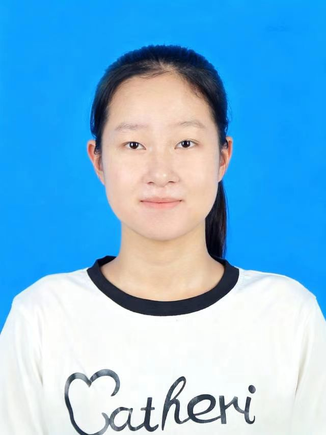

Personal Resume
| 基本信息 | |||||
|---|---|---|---|---|---|
| 姓名 | 李炅馨 | 出生年月 | 2006.10 |  | |
| 性别 | 女 | 政治面貌 | 共青团员 | ||
| 学历 | 本科 | 专业 | 计算机科学与技术 | ||
| 联系方式 | 13361211316 | 邮箱 | 2829089112@qq.com | ||
| 教育经历 | |||
|---|---|---|---|
| 起止时间 | 学校名称 | 专业 | 主修课程 |
| 2025.09 - 2029.06 | 鲁东大学 | 计算机科学与技术（本科） | HTML5、数据结构、计算机网络、操作系统等 |
| 项目经历 | ||
|---|---|---|
| 项目名称 | 角色 | 项目描述 |
| 2025年软件杯大赛 - 智能校园管理系统 | 前端开发 |
1. 负责用户模块、课程管理模块的前端页面开发与交互实现； 2. 使用HTML5+CSS3实现响应式布局，兼容多终端访问； 3. 优化页面加载速度，提升用户体验。 |
性格上，我兼具严谨与创新：面对技术难题能沉下心钻研，同时善于从不同角度思考解决方案。业余时间坚持长跑和围棋，培养了我的耐力与全局观。
我期待加入一个重视技术成长的团队，在实践中不断提升自己，为项目创造价值。